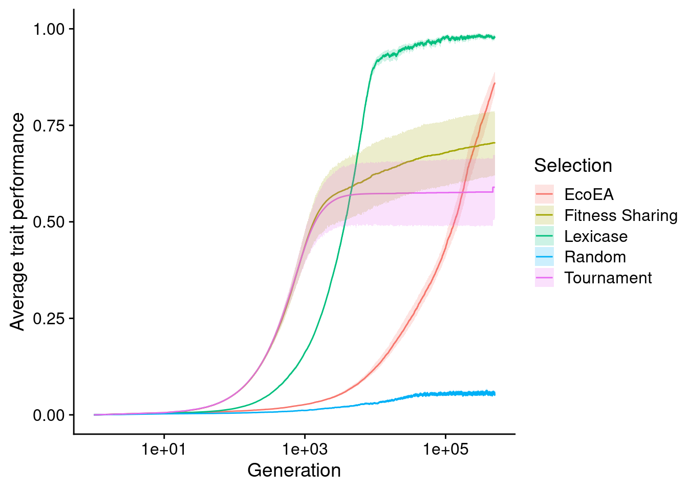
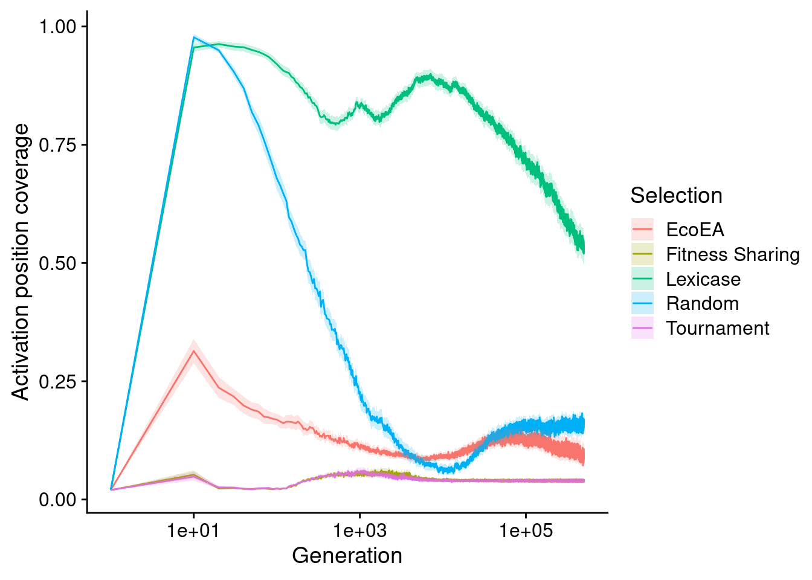
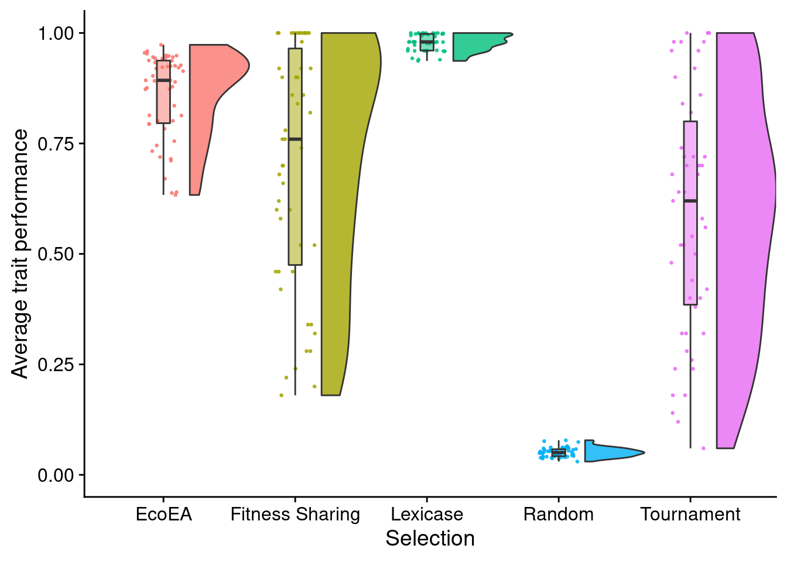
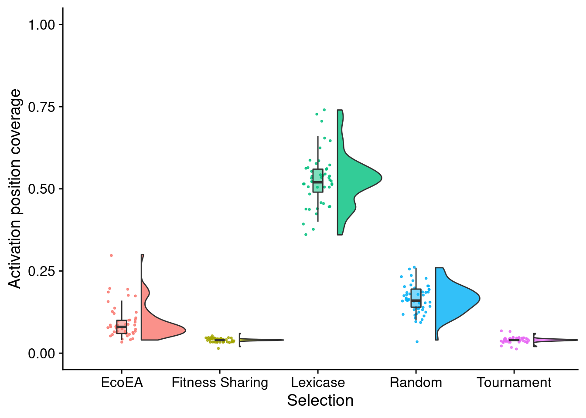

Chapter 3 Performance
For context, it’s important to know how each selection scheme performed on the exploration diagnostic.
3.1 Over time
First we look at the dynamics of performance over time.
3.1.0.1 Trait performance
Plot average trait performance (i.e. fitness) over time for each selection scheme. We log the x-axis because Eco-EA gains fitness over a very long time scale, whereas the interesting dynamics for the other selection schemes occur relatively quickly.
ggplot(
data,
aes(
x=gen, # Generations
y=elite_trait_avg, # Performance
color=selection_name, # Selection scheme
fill=selection_name
)
) +
stat_summary(geom="line", fun=mean) + # Plot line showing mean for each selection scheme
stat_summary( # Add shading around each line indicating 95% confiedence interval
geom="ribbon",
fun.data="mean_cl_boot",
fun.args=list(conf.int=0.95),
alpha=0.2,
linetype=0
) +
scale_y_continuous(
name="Average trait performance", # Set y axis title
limits=c(0, performance_ylim) # Set y axis range to include all possible performance values
) +
scale_x_log10( # Log x axis
name="Generation" # Set x axis title
) +
scale_color_discrete("Selection") + # Set legend title
scale_fill_discrete("Selection") # Set legend title
As observed by Hernandez et al. in their original paper on the exploration diagnostic, fitness in tournament selection initially increases quickly and then plateaus. Fitness in lexicase selection increases slightly slower but plateaus at a much higher value (nearly 100%). Fitness sharing behaves similarly to tournament selection, but maintains a slight upward trajectory (note that, because the x axis is on a log scale, this trajectory is very gradual). Eco-EA takes substantially longer to increase in fitness but ultimately surpasses fitness sharing and tournament selection. It is unclear whether it would pass lexicase selection if these runs were allowed to continue for slightly longer; they do not appear to have plateaued yet. We chose to cut them off at 500,000 generations due to resource constraints and the fact that the questions we’re asking here are not really about final fitness.
3.1.0.2 Activation position coverage
Out of curiosity, we also ran the analysis of unique activation positions present in the population, used by Hernandez et. al. This analysis tells us about the diversity of start positions for the coding region represented in the population. As the set of start positions in the population tends to represent a meaningful constraint on the number of paths through the fitness landscape that are currently accessible, this is in some sense a metric of useful diversity in the population
ggplot(data, aes(x=gen, y=unique_start_positions_coverage, color=selection_name, fill=selection_name)) +
stat_summary(geom="line", fun=mean) +
stat_summary(
geom="ribbon",
fun.data="mean_cl_boot",
fun.args=list(conf.int=0.95),
alpha=0.2,
linetype=0
) +
scale_y_continuous(
name="Activation position coverage",
limits=c(0, 100)
) +
scale_x_log10(
name="Generation"
) +
scale_color_discrete("Selection")+
scale_fill_discrete("Selection")
We see that lexicase selection maintains by far that largest number of unique start positions, even surpassing the number maintained by random drift. This suggests that lexicase selection is actively selecting for maintaining a diversity of start positions. Tournament selection and fitness sharing perform virtually identically, with Eco-EA falling in between.
3.2 Final
While trends over time are more informative, it can be hard to visualize the full distribution (particularly the extent of variation). Thus, we also conduct a more detailed analysis of performance at the final time point.
3.2.0.1 Trait performance
First we conduct statistics to identify which selection schemes are significantly different from each other.
# Compute manual labels for geom_signif
stat.test <- final_data %>%
wilcox_test(elite_trait_avg ~ selection_name) %>%
adjust_pvalue(method = "bonferroni") %>% # Apply Bonferroni correction for multiple comparisons
add_significance() %>%
add_xy_position(x="selection_name",step.increase=1)
stat.test$label <- mapply(p_label,stat.test$p.adj)Then we make raincloud plots of each selection scheme.
elite_final_performance_fig <- ggplot(
final_data,
aes(
x=selection_name,
y=elite_trait_avg,
fill=selection_name
)
) +
geom_flat_violin(
position = position_nudge(x = .2, y = 0),
alpha = .8,
scale="width"
) +
geom_point(
mapping=aes(color=selection_name),
position = position_jitter(width = .15),
size = .5,
alpha = 0.8
) +
geom_boxplot(
width = .1,
outlier.shape = NA,
alpha = 0.5
) +
scale_y_continuous(
name="Average trait performance",
limits=c(0, performance_ylim)
) +
scale_x_discrete(
name="Selection"
) +
scale_fill_discrete(
name="Selection"
) +
scale_color_discrete(
name="Selection"
) +
theme(legend.position="none")
elite_final_performance_fig
These observations look fairly consistent with the timeseries plots.
Next, we output the results of our significance testing.
stat.test %>%
kbl() %>%
kable_styling(
bootstrap_options = c(
"striped",
"hover",
"condensed",
"responsive"
)
) %>%
scroll_box(width="600px")| .y. | group1 | group2 | n1 | n2 | statistic | p | p.adj | p.adj.signif | y.position | groups | xmin | xmax | label |
|---|---|---|---|---|---|---|---|---|---|---|---|---|---|
| elite_trait_avg | EcoEA | Fitness Sharing | 50 | 50 | 1561 | 3.20e-02 | 3.20e-01 | ns | 1.922000 | EcoEA , Fitness Sharing | 1 | 2 | p = 0.32 |
| elite_trait_avg | EcoEA | Lexicase | 50 | 47 | 60 | 0.00e+00 | 0.00e+00 | **** | 2.946444 | EcoEA , Lexicase | 1 | 3 | p < 1e-04 |
| elite_trait_avg | EcoEA | Random | 50 | 50 | 2500 | 0.00e+00 | 0.00e+00 | **** | 3.970889 | EcoEA , Random | 1 | 4 | p < 1e-04 |
| elite_trait_avg | EcoEA | Tournament | 50 | 50 | 1939 | 2.10e-06 | 2.07e-05 | **** | 4.995333 | EcoEA , Tournament | 1 | 5 | p < 1e-04 |
| elite_trait_avg | Fitness Sharing | Lexicase | 50 | 47 | 593 | 2.69e-05 | 2.69e-04 | *** | 6.019778 | Fitness Sharing, Lexicase | 2 | 3 | p = 0.000269 |
| elite_trait_avg | Fitness Sharing | Random | 50 | 50 | 2500 | 0.00e+00 | 0.00e+00 | **** | 7.044222 | Fitness Sharing, Random | 2 | 4 | p < 1e-04 |
| elite_trait_avg | Fitness Sharing | Tournament | 50 | 50 | 1549 | 4.00e-02 | 4.00e-01 | ns | 8.068667 | Fitness Sharing, Tournament | 2 | 5 | p = 0.4 |
| elite_trait_avg | Lexicase | Random | 47 | 50 | 2350 | 0.00e+00 | 0.00e+00 | **** | 9.093111 | Lexicase, Random | 3 | 4 | p < 1e-04 |
| elite_trait_avg | Lexicase | Tournament | 47 | 50 | 2098 | 0.00e+00 | 0.00e+00 | **** | 10.117556 | Lexicase , Tournament | 3 | 5 | p < 1e-04 |
| elite_trait_avg | Random | Tournament | 50 | 50 | 10 | 0.00e+00 | 0.00e+00 | **** | 11.142000 | Random , Tournament | 4 | 5 | p < 1e-04 |
3.2.0.2 Final activation position Coverage
Now we do the same analysis for final activation position coverage.
First we calculate the statistics
# Compute manual labels for geom_signif
stat.test <- final_data %>%
wilcox_test(unique_start_positions_coverage ~ selection_name) %>%
adjust_pvalue(method = "bonferroni") %>%
add_significance() %>%
add_xy_position(x="selection_name",step.increase=1)
stat.test$manual_position <- stat.test$y.position * 1.05
stat.test$label <- mapply(p_label,stat.test$p.adj)Then we make raincloud plots
unique_start_positions_coverage_final_fig <- ggplot(
final_data,
aes(
x=selection_name,
y=unique_start_positions_coverage,
fill=selection_name
)
) +
geom_flat_violin(
position = position_nudge(x = .2, y = 0),
alpha = .8,
scale="width"
) +
geom_point(
mapping=aes(color=selection_name),
position = position_jitter(width = .15),
size = .5,
alpha = 0.8
) +
geom_boxplot(
width = .1,
outlier.shape = NA,
alpha = 0.5
) +
scale_y_continuous(
name="Activation position coverage",
limits=c(0, coverage_ylim)
) +
scale_x_discrete(
name="Selection"
) +
scale_fill_discrete(
name="Selection"
) +
scale_color_discrete(
name="Selection"
) +
theme(
legend.position="none"
)
unique_start_positions_coverage_final_fig
These also look unsurprising.
Lastly, we output the results of significance testing.
stat.test %>%
kbl() %>%
kable_styling(
bootstrap_options = c(
"striped",
"hover",
"condensed",
"responsive"
)
) %>%
scroll_box(width="600px")| .y. | group1 | group2 | n1 | n2 | statistic | p | p.adj | p.adj.signif | y.position | groups | xmin | xmax | manual_position | label |
|---|---|---|---|---|---|---|---|---|---|---|---|---|---|---|
| unique_start_positions_coverage | EcoEA | Fitness Sharing | 50 | 50 | 2392.5 | 0.000 | 0 | **** | 1.420000 | EcoEA , Fitness Sharing | 1 | 2 | 1.491000 | p < 1e-04 |
| unique_start_positions_coverage | EcoEA | Lexicase | 50 | 47 | 0.0 | 0.000 | 0 | **** | 2.175556 | EcoEA , Lexicase | 1 | 3 | 2.284333 | p < 1e-04 |
| unique_start_positions_coverage | EcoEA | Random | 50 | 50 | 339.0 | 0.000 | 0 | **** | 2.931111 | EcoEA , Random | 1 | 4 | 3.077667 | p < 1e-04 |
| unique_start_positions_coverage | EcoEA | Tournament | 50 | 50 | 2387.0 | 0.000 | 0 | **** | 3.686667 | EcoEA , Tournament | 1 | 5 | 3.871000 | p < 1e-04 |
| unique_start_positions_coverage | Fitness Sharing | Lexicase | 50 | 47 | 0.0 | 0.000 | 0 | **** | 4.442222 | Fitness Sharing, Lexicase | 2 | 3 | 4.664333 | p < 1e-04 |
| unique_start_positions_coverage | Fitness Sharing | Random | 50 | 50 | 25.0 | 0.000 | 0 | **** | 5.197778 | Fitness Sharing, Random | 2 | 4 | 5.457667 | p < 1e-04 |
| unique_start_positions_coverage | Fitness Sharing | Tournament | 50 | 50 | 1274.5 | 0.708 | 1 | ns | 5.953333 | Fitness Sharing, Tournament | 2 | 5 | 6.251000 | p = 1 |
| unique_start_positions_coverage | Lexicase | Random | 47 | 50 | 2350.0 | 0.000 | 0 | **** | 6.708889 | Lexicase, Random | 3 | 4 | 7.044333 | p < 1e-04 |
| unique_start_positions_coverage | Lexicase | Tournament | 47 | 50 | 2350.0 | 0.000 | 0 | **** | 7.464444 | Lexicase , Tournament | 3 | 5 | 7.837667 | p < 1e-04 |
| unique_start_positions_coverage | Random | Tournament | 50 | 50 | 2475.5 | 0.000 | 0 | **** | 8.220000 | Random , Tournament | 4 | 5 | 8.631000 | p < 1e-04 |